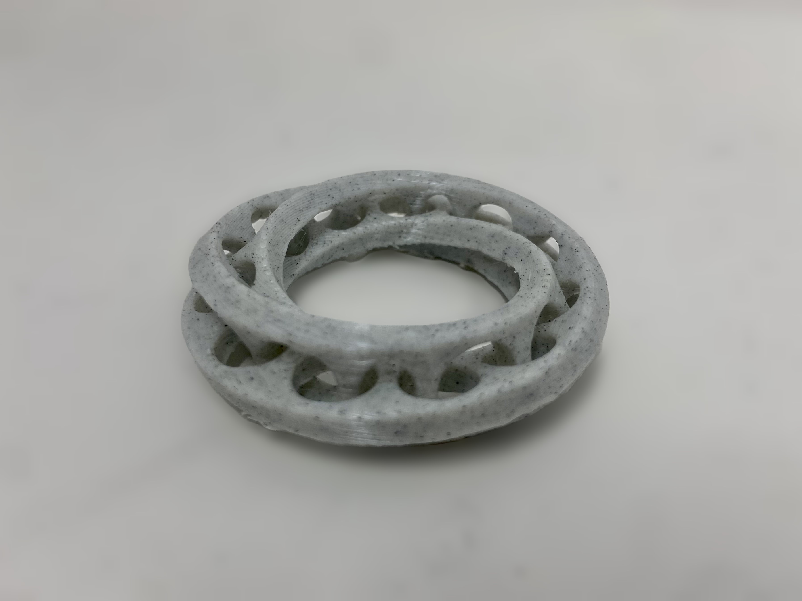
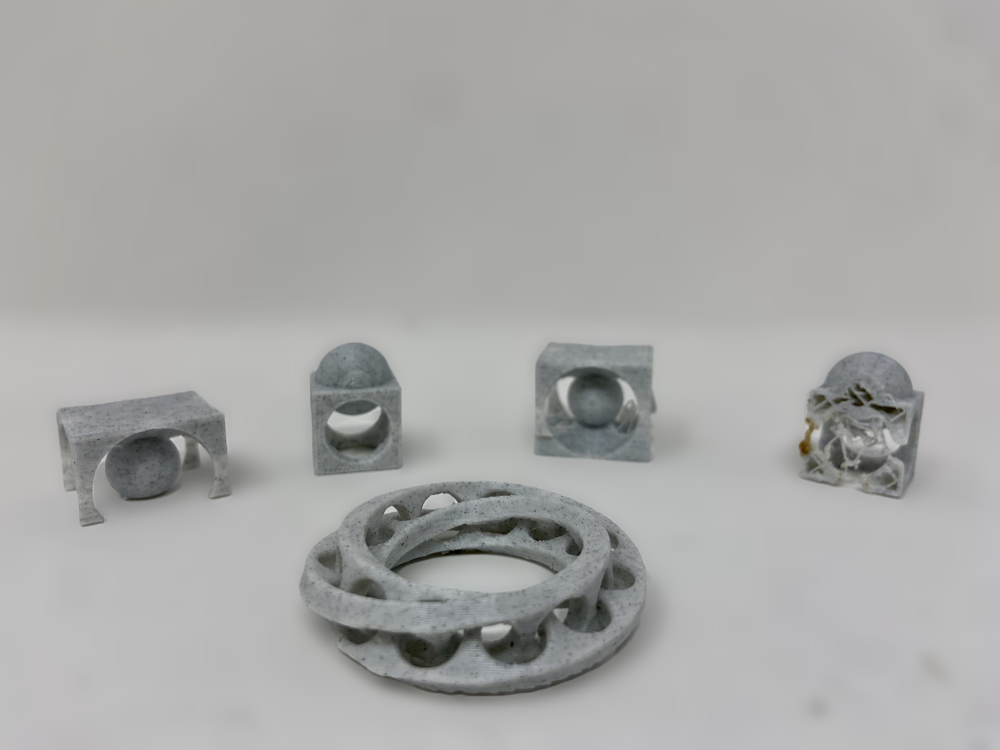

<div class="textcontainer">
<p class="margin"> </p>
<h4>Assignment: Design and Print Something</h4>
The assignment asked that we print something that otherwise could not be made with subtractive methods. I started thinking about mathematically derived & illusory shapes and decided it would be fun to try an interlocking [mobius strip](https://en.wikipedia.org/wiki/M%C3%B6bius_strip). Fortunately, I found a lovely [tutorial](https://www.youtube.com/watch?v=1c1jvjf03dE) that taught me some new Fusion operations like sweeping with a twist angle, and thickening as opposed to extruding. The mobius strip is cool because it has no apparent beginning or end, and the interlocking feature would make it nearly impossible to fabricate subractively.
<p class="margin"> </p>
<div class="flexrow">
<img src="./mobius model.png" alt="a 3D model of a mobius strip" style="width:100%; max-width:400px;">
<img src="./mobius model 2.png" alt="a 3D model of a mobius strip" style="width:100%; max-width:400px;">
</div>
<p class="caption">Mobius strip modeled in Fusion</p>
As another test, I wanted to just experiment with some combinations of more basic geometries that would also be very difficult to fabricate subtractively. I had Rhino open at the time so quickly modeled these using boolean differences.
<p class="margin"> </p>
<div class="flexrow">
<img src="cube prints.png" alt="a 3D model of a mobius strip" style="width:100%; max-width:500px;">
</div>
<p class="caption">More model experiments for printing</p>
I had mixed results with the printing. The mobius strip came out quite well, just took a little time to clear out the supports that I needed after the print. The cube shapes failed on the first print because they unstuck from the bed. I tried again using some 3D print adhesive spray and that seemed to work well for one of the shapes, however the other still failed along the thinnest parts of the model. Probably needed support there.
<p class="margin"> </p>
<div class="flexrow">


</div>
<p class="caption">All successful and failed prints</p>
<p class="margin"> </p>
<p class="margin"> </p>
<h4>Assignment: 3D Scan Something</h4>
I wanted to try scanning something organic that otherwise would be very difficult to model digitally. I went outside, brought in a pinecone, and set it up on the lab scanner. I had a hard time capturing all the complex surfaces (an hour's worth of attempts) but eventually got there, only to mess everything up by choosing the "one-click" post processing that ultimately deleted alot of the important images and ruined the scan.
<p class="margin"> </p>
<div class="flexrow">
<img src="cone scan.jpg" alt="scanning a pinecone" style="width:100%; max-width:300px;">
<img src="pinecone fail.png" alt="failed pinecone scan" style="width:100%; max-width:300px;">
</div>
<p class="caption">Pinecone failure</p>
My next idea was to try scanning the mobius strip that I had just printed, because I was curious how the scanner would handle an object with no obvious orientation. This did in fact turn out to be a challenge, as the scanner really struggled to recognize where curves and edges stopped and started. Kassia and I both tried and the gif below is the best result we got. Next time, it might be helpful to try putting some other object on the rotating table as well so the scanner has a better reference point.
<p class="margin"> </p>
<div class="flexrow">
<img src="scan.gif" alt="scanned mobius strip" style="width:100%; max-width:500px;">
</div>
<p class="caption">Rough, patchy, incomplete scan of the interlocking mobius strip</p>
<a download href='./week_5.zip'>Download my 3D files from the week here here </a>
</div>